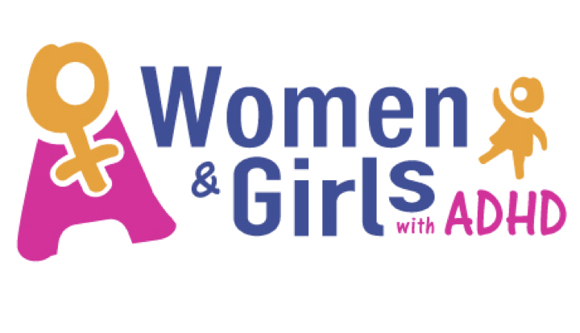

Parents Invited to Participate in Study
Parents of children with ADHD are invited to participate in a research study examining their experiences of the health, mental health and education services provided for their children. The study is being conducted by Andrew Kennedy a Trainee Educational Psychologist studying for the degree of Doctorate in Educational Psychology in the School of Education, University College Dublin.
To participate parents can complete an online survey. The survey questionnaire will close on the 1st of February.
More information on the the study can be downloaded here.
9 January 2018
ADHD Europe Declaration about ADHD in Girls & Women
Declaration about ADHD in Girls & Women has been announced by ADHD Europe as part of ADHD awareness month. Please read and share with others.
A PDF copy of the declaration can be found on our website.
10 October 2017
INCADDS Seminar – Women & Girls with ADHD

9 AM to 4 PM October 16th, 2017
at the Athlone Springs Hotel.
Keynote – Dr. Laura Muggli ‘Links with ADHD and Eating Disorders’
Other speakers – Dr. Padraig MacNeela, Dr. Ryan O’Neill, Dr. Michael Keane and Ms Heather Blackmore
€50 (including lunch)
Information and bookings: info@incadds.ie or 091-755090
02 October 2017
ADHD Awareness Month 2017
October is ADHD Awareness Month. The theme of this year’s campaign is Women with ADHD.
02 October 2017
BEST-ADHD Study Research and Summary Reports Available
Research and summary reports are available for download for the Better Education, Services, and Treatments for People with Attention Deficit / Hyperactivity Disorder Study (BEST-ADHD) – ‘Finding Your Way With ADHD: Struggles, Supports, and Solutions’
Research Study Summary & Research Report
11 September 2016
Adult ADHD Research Study Launch
Please Join Us for the Launch of “The Better Education, Services, and Treatments for People with AD/HD Study” (BEST-ADHD) on Monday, September 12 at the Institute for Lifecourse & Society (ILAS), NUI Galway.
More details and free registration are available on Evite.
Launch flyer is also available for download.
2 September 2016
A New Research Study on Personal Experiences of ADHD
A new research study is underway from August-October 2015 on what it is like to have Attention Deficit Hyperactivity Disorder (ADHD). The ‘Better Education, Services, and Treatment for People with Attention Deficit / Hyperactivity Disorder’ Study (BEST-ADHD), led by researchers at the School of Psychology at NUI Galway and the Irish National Council for Attention Deficit Hyperactivity Disorder (ADD/ADHD), is now looking for adult volunteers to take part – men or women aged 18 or over with ADD or ADHD who would like to talk about their experiences of ADHD, education and health care in an individual research interview. There is also an online survey as an alternative to the interview.
More details can be found in the study’s information sheet and research factsheet.
15 August 2015
Participants Needed for Study on Sleep Problems and GI Symptoms in ASD Children
A Ph.D. candidate from the National University of Ireland, Galway is seeking parents of autism spectrum disorder (ASD) children between the ages of 3 to 17 years to participate in a survey to examine sleep problems and gastrointestinal symptoms in children and adolescents with ASD. Even if your child does not have sleep problems or gastrointestinal symptoms, you are still invited to take part as your information can help inform why these symptoms are present in some children and not in others. For more details see the participant information sheet.
19 November 2014
Participants Needed for Study on Why Adults with ADHD Are More Likely to Develop Anxiety Disorders
A Ph.D. student from University College Dublin, under the supervision of Dr. Jessica Bramham, is seeking adults with a diagnosis of
ADHD, anxiety, ADHD+anxiety to take an online questionnaire for a study entitled “Why are adults with ADHD more likely to develop anxiety disorders? An investigation of risk factors, measurement techniques, and impact on neuropsychological functioning”. The research has been ethically approved by UCD Office of Research Ethics. For more details see the study flyer.
18 November 2014
New Research Shows Autistic Youth Vulnerable to Alcohol Dependence
New research from the Washington University in St. Louis, Missouri has revealed a link between young people with autistic tendencies and alcohol problems. For more details see this blog post from Washington University’s Department of Genetics.
News source – The Fix.
17 June 2014